PROJECT LAB: SOFTWARE REQUIREMENTS SPECIFICATION¶
SRS¶
I- INTODUCTION¶
I-1 PURPOSE:¶
The purpose of this document is to present a detailed description of a lap report repository. It will explain the purpose and features of the Lab report, the interfaces of the lab report, what the lab report will do, the constraints under which it must operate and how the system will react to external stimuli. This document is intended for students, instructors, visitors, TAs and administrators of the system.
I-2 SCOPE OF PROJECT:¶
This software system will be a lab report repository for student to be able to upload their assignments. This system will be designed to help instructors to read and mark uploaded assignments of student also other visitors can visit the system if they want to. The lab report will be to understand and use.
More specifically, this lab report is designed to allow an administrator to manage and communicate with a group of reviewers and student who post to a public web side. The software will facilitate communication between instructors, students, visitors and TAs via E-mail. Preformatted reply forms are used in every stage of the report progress through the system to provide a uniform review process; the location of these forms is configurable via the application?s maintenance options.
I-3 DEFINITION:¶
Instructor
is a teacher of the lab responsible to update some information and send it to the students.
Student
is someone who is registered for the lab class.
Administrator
is a system admin who is giving specific permission for managing and controlling the system.
Visitor
someone else who visit or take part of some information in our application.
TAs
is a teacher assistant who update some information.
II- DESCRIPTION:¶
This section will give an overview of the whole system. The system will be explained in its context to show how the system interacts with other systems and introduce the basic functionality of it. It will also describe what type of stakeholders that will use the system and what functionality is available for each type.
II-1 PRODUCT PERSPECTIVES:¶
This system will consist of only one part: web portal. The web portal will be used for managing the information about the website and the?system as a whole.
Since this is a data-centric product it will need somewhere to store the data. For that, a database will be used. The web portal will communicate with the database, however in slightly different ways. The web portal will also add and modify data. All of the database communication will go over the Internet.
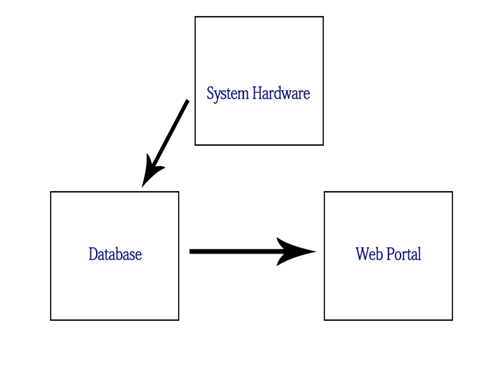Fig: Block diagram
II-2 PRODUCT FUNCTIONS:¶
With the web application, student will be able to post their assignment and get information back from the instructors and TAs, the visitors will also be able to search for information. It will be possible for the administrator of the system to manage the options for those criteria that have that.
The result of the search will be viewed either in a list view.
The web portal will provide functionality to manage the system and the web information. It will also provide information about the system.
II-3 USER CHARACTERISTICS:¶
There are five types of users that interact with the system: users of the web application, student, instructors, TAs, visitors and administrators. Each of these five types of users has different use of the system so each of them has their own requirements.
The student users can post assignments and give feedback to the instructors. The instructors can also post assignment, mark assignment and give feedback to students. The TAs also works like the instructors they have the same funtions. The visitors only search for information on the system.
The administrators also only interact with the web portal. They are managing the overall system so there is no incorrect information within it. The administrator can manage the information.
II-4 CONSTRAINTS:¶
The Internet connection is also a constraint for the application. Since the application fetches data from the database over the Internet, it is crucial that there is an Internet connection for the application to function.
The web portal will be constrained by the capacity of the database.
II-5 ASSUMPTIONS AND DEPENDENCIES:¶
One assumption about the product is that it can also be used on mobile phones Another assumption is that the visitors can be able to asses some information?s on the system.
II-6 APPORTIONING OF REQUIREMENTS:¶
In the case that the project is delayed, there are some requirements that could be transferred to the next version of the application. Those requirements are to be developed in the third release.
III- SPECIFIC REQUIREMENTS:¶
This section contains all of the functional and quality requirements of the system. It gives a detailed description of the system and all its features.
III-1 EXTERNAL INTERFACE REQUIREMENTS:¶
This section provides a detailed description of all inputs into and outputs from the system. It also gives a description of the hardware, software and communication interfaces and provides basic prototypes of the user interface.
III-1-1 USER INTERFACES:¶
A first-time user of the application should see the log-in page when he/she opens the application, see Figure 2. If the user has not sign up, he/she should be able to do that on the log-in page.
If the user is not a first-time user, he/she should be able to see the home page directly when the application is opened, see Figure 3. Here the user chooses the type of program he/she wants to conduct.
Every user should have a profile page where they can edit their e-mail address, ID number, select program, language and password, see Figure 4.
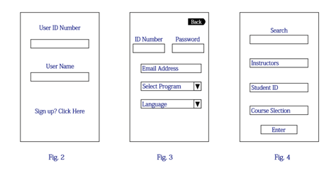Fig: Login page Fig: Search page Fig: Profile page
In Figure 5, Students, instructor, visitors, TAs and administrators interact with the system through a web-portal. A student should be able to register on the web-portal in order to log in and manage his/her account. An administrator should also be able to log in to the web-portal where he/she can administer the system by for instance editing restaurant or user information.
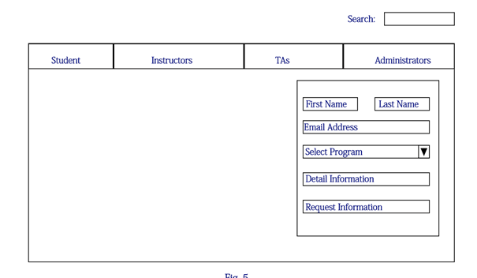III-1-2 HARDWARE INTERFACES:¶
Since the web portal have any designated hardware, it does not have any direct hardware interfaces. The hardware connection to the database server is managed by the underlying operating system on the computer and the web server.
III-1-3 SOFTWARE INTERFACES:¶
The system communicates with the database to get information about the students, visitors and instructor. the communication between database and web portal consists of modifying and updating user informations.
III-2 FUNCTIONAL REQUIREMENTS:¶
This section include the requirements that specify all the fundamental actions of our software system , such as uses case.
III-2-2 DATABASE:¶
A database is an organized collection of data, stored and accessed electronically. Database designers typically organize the data to model aspects of reality in a way that supports processes requiring information, such as (for example) modelling the online lab report of students assignment in lab and teacher give them feedback.
For this project, we have five (5) tables such as:
1- students
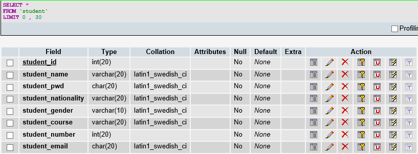Fig: student table
2- instructors
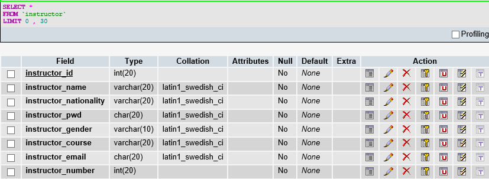Fig: instructor table
3- administrators
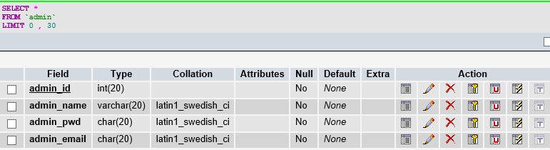Fig: administrator table
4- TAs
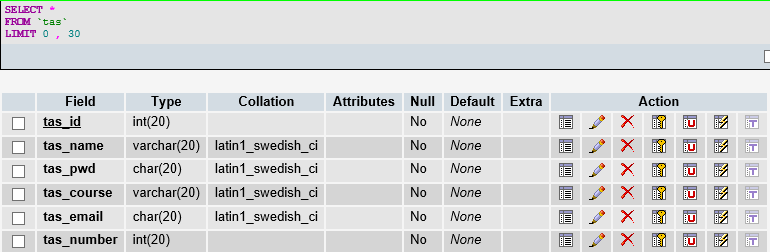Fig: TAs table
5- visitors
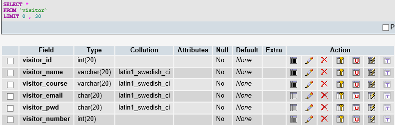Fig: visitor table
III-2-3 UML DIAGRAMS:¶
UML means Unified Modeling Language. UML is a way of visualizing a software program using a collection of diagrams. UML 2.0 helped extend the original UML specification to cover a wider portion of software development efforts including agile practices.
Development process and UML diagram :
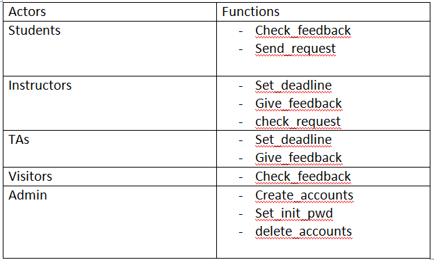III-2-3-1 Behavioral UML diagrams:¶
A- Use case diagram
A use case diagram is a set of use cases, actors and their relationships.it?s represents the use case view of a system. For our project lab, we have five (5) actors and then we have doing a use case of each actor of system. It represents a particular functionality of a system. Use case diagram is used to describe the relationships among the functionalities and their internal/external controllers. These controllers are known as actors. For example, for our lab project , our controllers is admin.
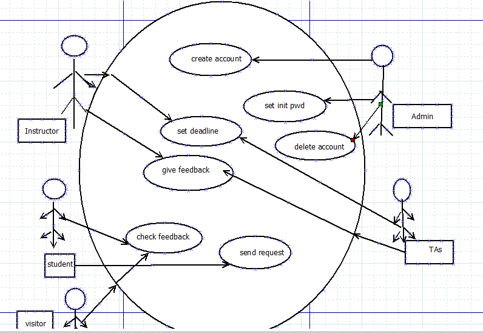visitor use case¶
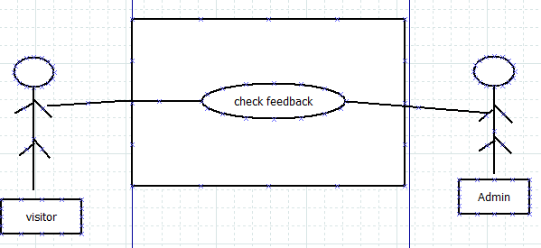student use case¶
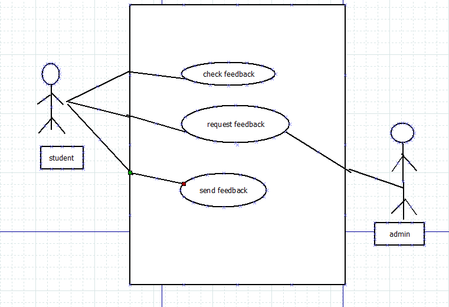instructor use case¶
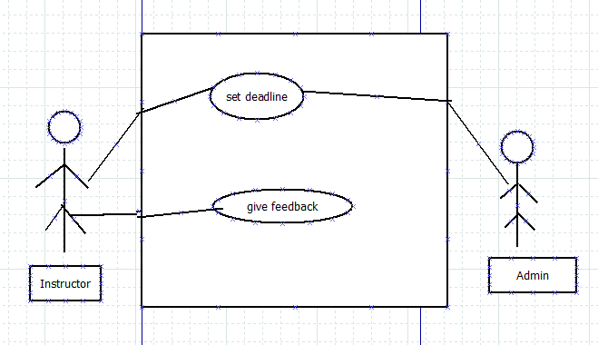tas use case¶
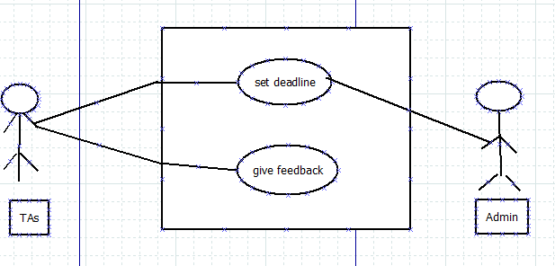Fig: use case diagram
B- Sequence diagram
A sequence diagram is an interaction diagram. From the name it?s clear that the diagram deals with some sequences, which are the sequence of messages flowing from one object to another. It?s use to visualize the sequence of calls in a system to perform a specific functionality.
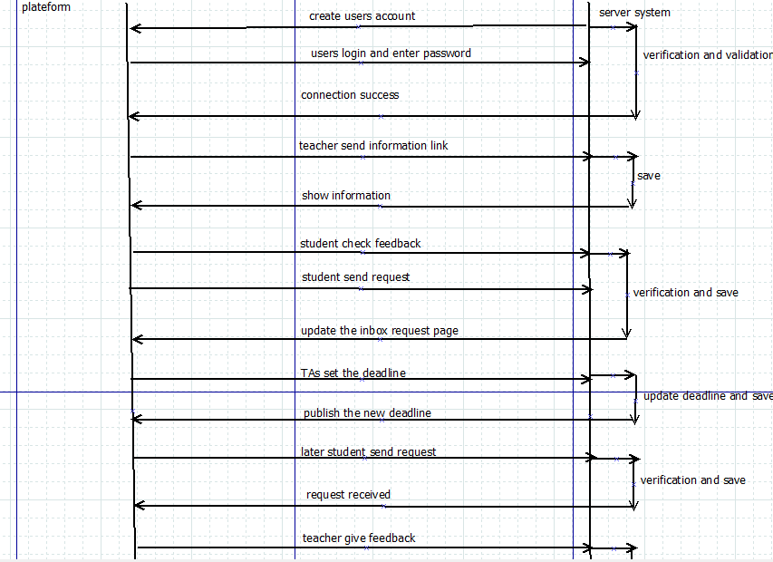Fig: sequence diagram
C- Activity diagram
Activity diagram describes the flow of contol in a system. It consists of activities and links. Activity diagram are used t visualize the floor of controls in a system.
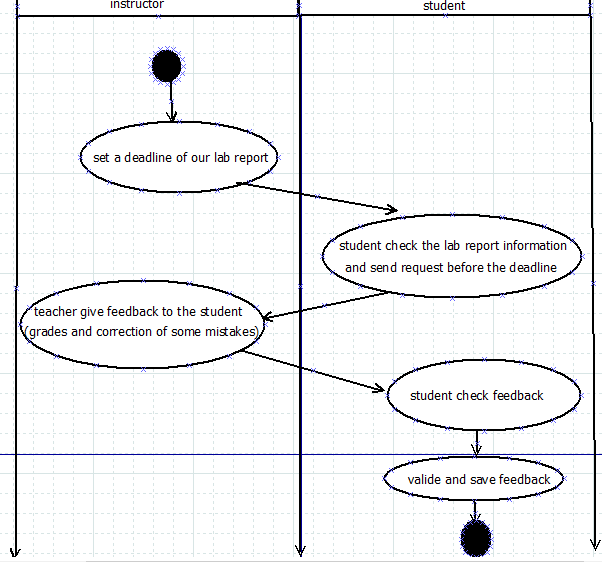Fig: activity diagram
III-2-3-2 Structural UML diagrams¶
A- Class diagram
A class diagram consists of classes, interfaces, associations and collaboration. In this lab project, this class diagram bellow represent basically the object-oriented view of our system.
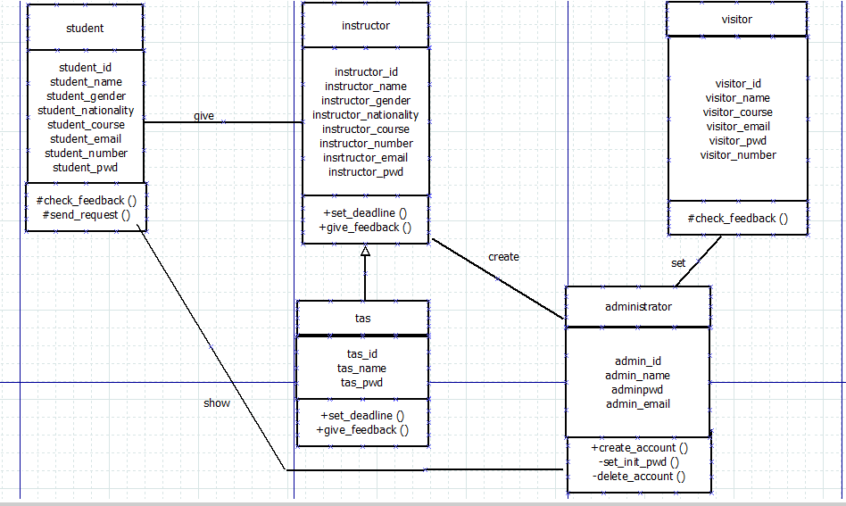Fig: class diagram
B- Component diagram
A component diagram represent a set of components and their relationships. These components consist of classes, interfaces and collaborations. It represents the implementation view of a system.
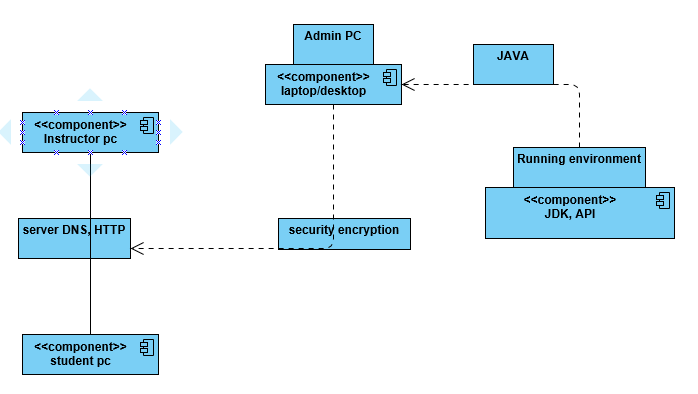Fig: component diagram
III-3 SCENARIO:¶
create account¶
When the instructor wants to create account he/she will:
Enter name
Enter id
Enter email
Enter phone number
Enter course
Enter password
Enter nationality
Enter gender
Press the button create
Press enter
when the student wants to create account he/she will:
enter name
Enter id
Enter email
Enter phone number
Enter course
Enter password
Enter nationality
Enter gender
Press the button create
Press enter
when the visitor want to create account he/she will :
Enter name
Enter id
Enter course
Enter email
Enter password
Enter phone number
Press the button create
Press enter
when the TAs wants to create account he/she will:
Enter name
Enter id
Enter password
Press the button create
Press enter
when the administrator wants to create account he/she will:
Enter name
Enter id
Enter password
Enter email
Press the button create
Press enter
set initial password¶
when the instructor wants to set initial password he/she will:
Enter a new password
Confirm this new password
Press the button save
Press ok
when the student wants to set initial password he/she will:
Enter a new password
Confirm this new password
Press the button save
Press ok
when the visitor wants to set initial password he/she will:
Enter a new password
Confirm this new password
Press the button save
Press ok
when the administrator wants to set initial password he/she will:
Enter a new password
Confirm this new password
Press the button save
Press ok
when the TAs wants to set initial password he/she will:
Enter a new password
Confirm this new password
Press the button save
Press ok
delete account
when the instructor want to delete account he/she will:
Click in account
Press the button delete
Press enter
when the student want to delete account he/she will:
Click in account
Press the button delete
Press enter
when the visitor want to delete account he/she will:
Click in account
Press the button delete
Press enter
when the TAs want to delete account he/she will:
Click in account
Press the button delete
Press enter
when the administrator wants to delete account he/she will:
Click in account
Press the button delete
Press enter
set deadline¶
when the instructor wants to set deadline he/she will:
Click on information
Click on set deadline
Press save
Press enter
when the TAs wants to set deadline he/she will:
Click on information
Click on set deadline
Press save
Press enter
give feedback¶
when the instructor wants to give feedback he/she will:
Click on feedback
click on the button sent
Press enter
when the TAs wants to give feedback he/she will:
Click on feedback
click on the button sent
Press enter
check feedback¶
when the student wants to check feedback he/she will:
Click on feedback
Click on the button check
Press enter
when the visitor wants to check feedback he/she will:
Click on feedback
Click on the button check
Press enter
send request¶
when the student wants to send request he/she will:
Click on request
Click on the button send
Press enter
login in the web portal
Fill in your name or email
Fill in your password
Press the button connection
check feedback¶
Click on feedback menu
Click on the link
Open the link
Read the link
Download the link
set the deadline¶
Click on the calendar
Select the date
Click on extend deadline
Click on update deadline
Press in save new deadline
delete account¶
Click on users account
Select the account
Click on delete
Click on suspend account
Press in the button enter
initialize a password¶
Select user account
Choose the account
Click on the button initialize
Fill in the password
Save the new password
Press the button enter
IV- PRIORITIZATION AND RELEASE PLAN:¶
IV -1 PROGRAMMING LANGUAGE:¶
JAVA JDK 8
we use java language because in java everything is an object, it can be easily extended since it is based on the object model. It?s simple and easy to learn, it?s secure, it?s portable, it?s robust, it?s interpreted : java byte code is translated on the fly to native machine instructions and is not stored anywhere.java has a high performance and it?s multithreaded : it?s possible to write programs that can perform many tasks simultaneously.
WampServer
In our project, we have used the server Wamp, which provides the basics for setting up your local Apache/PHP/MySQL environment on windows.
Apache
Is our web server software.
PHP
Is the general purpose scripting language that runs on Apache.
MySQL
Is the database server software that works hand-in-hand with PHP and Apache. phpMyAdmin is a free software tool written in PHP, intended to handle the administration of MYSQL over the web. Concerning our project, we have used phpMyAdmin to develop our database.
SUBLIME
Is a test editor which helps us to write our srs in Read the doc.
DIA
Is an application which helps us to do our UML diagrams.
VISUAL STUDIO
Is a source code editor developed by Microsoft for windows, linux and macOS. It includes support for debugging, embedded Git control…in our lab project, we choose visual studio to implement our application and develop environment tools.
##IV-2 DESIGN CONSTRAINTS:
This part includes the design constraints on the software caused by the hardware.
###IV-2-1 Hard drive space
For our project, the application’s need of hard drive space.
For meter we need MegaByte MB.
###IV-2-2 Application memory usage
Application memory can take GegaByte MB. Project includes many applications.
###IV-3 Software system attributes
The attribute requirements are the heart ans soul of why our customers will value our software.
Reliability
the reliability system. our system should gives the right result on a search.
Maintainability
Application should be easy to extend. code should be written in a way that it favors implementatio of new functions.
Security
The Communication between system and server need to be more secure. should respect the security principles such as: authentification, confidently, verification..
Availability
The system should be available when it is used.
Portability
Application should be portable with multiple system such as LINUX, WINDOWS, iOS, ANDROID, DEBIAN…
Robustness
our system should be robust to save amount of data and satistying the most of customers.
REFERENCES:¶
https://cn.bing.com/search?q=running+environment+phpmysql&src=IE-TopResult&FORM=IETR02&conversationid=&pc=EUPP_ https://www.tutorialspoint.com/uml/uml_standard_diagrams.htm https://www.tutorialspoint.com/uml/uml_standard_diagrams.htm https://courses.cs.washington.edu/courses/cse403/11sp/lectures/lecture08-uml1.pdf http://www.nyu.edu/classes/jcf/g22.2440-001_sp09/handouts/UMLBasics.pdf https://www.ibm.com/support/knowledgecenter/SS8PJ7_9.6.1/com.ibm.xtools.modeler.doc/topics/cinterfc.html https://techwhirl.com/writing-software-requirements-specifications/ https://www.uml-diagrams.org/component-diagrams.html https://www.ibm.com/developerworks/rational/library/dec04/bell/index.html https://docs.staruml.io/working-with-diagrams/component-diagram https://online.visual-paradigm.com/tutorials/component-diagram-tutorial/ https://www.tutorialspoint.com/uml/uml_component_diagram.htm https://online.visual-paradigm.com/diagrams.jsp#diagramlist:proj=0&new=ComponentDiagram https://www.smartdraw.com/component-diagram/ https://tallyfy.com/uml-diagram/